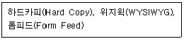
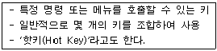
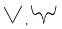
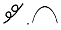
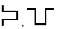
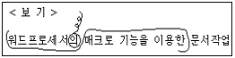
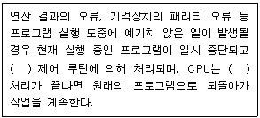
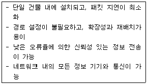

워드프로세서-2급(폐지) (2011-03-06 기출문제)
1과목: 워드프로세서 용어 및 기능
1. 다음 중 인쇄 장치에 대한 설명으로 옳지 않은 것은?
- 플로터는 용지의 크기 제한이 비교적 없으며 고해상도 출력이 가능하다.
- 프린터의 해상도를 높게 설정하면 인쇄의 품질은 높아지나 출력 속도는 느려진다.
- 잉크젯 프린터는 컬러를 표현하기 위해 4가지(CMYK) 색상의 잉크를 사용한다.
- 레이저 프린터에서 사용하는 토너란 검은색 잉크를 말한다.
(정답률: 70%)

2. 다음 중 클립보드를 이용한 작업에 대한 설명으로 옳지 않은 것은?
- 다른 프로그램에서 복사한 텍스트나 그림 항목을 복사하여 특정 워드프로세서 문서에 붙여 넣을 수 있는 기능이다.
- 복사하기를 하여 다른 곳에 붙이는 경우 원래의 문서는 아무런 변화가 생기지 않는다.
- 복사하기를 한 것은 여러 번 붙여넣기가 가능하지만 잘라내기 한 것은 한 번만 붙여넣기가 가능하다.
- [Alt]+[Print Screen] 키를 이용하면 현재 활성화된 화면만을 캡쳐하여 특정 문서에 붙여 넣을 수 있다.
(정답률: 71%)
3. 다음 중 워드프로세서에서 작성한 문서를 스프레드시트에서 불러올 수 있는 파일 형식으로 저장하고자 할 때 가장 알맞은 것은?
- 비트맵 형식(*.BMP)
- 한글 문서 형식(*.HWP)
- RTF 형식(*.RTF)
- 텍스트 형식(*.TXT)
(정답률: 65%)
4. 다음 중 CPU와 주기억장치 사이에 위치하며 두 장치 사이의 속도 차이를 극복하기 위한 저장장치는?
- 연상 기억장치
- 캐시 메모리
- 가상 메모리
- USB 메모리
(정답률: 85%)
5. 다음 중에서 가장 큰 인쇄용지는 어느 것인가?
- A3
- B4
- A4
- B5
(정답률: 73%)
6. 다음 중 파일명에 대한 설명으로 옳지 않은 것은?
- 파일명은 10자 이상 지정할 수 없다.
- 파일의 확장자는 파일의 특정 의미를 알 수 있으며 이름 뒤에 붙인다.
- 문서 저장 시 확장자를 사용자가 임의로 지정하여 저장할 수 있다.
- 파일 이름과 확장자는 점(.)으로 구분한다.
(정답률: 77%)
7. 다음 중 그림 삽입에 대한 설명으로 옳지 않은 것은?
- 그림의 크기를 조절할 수 있다.
- 문서에 포함해서 저장할 수 없다.
- 흑백 또는 명암 등을 조정할 수 있다.
- 그림과 글이 겹쳐있는 경우에 그림을 글 뒤로 보내 글의 배경으로 설정할 수 있다.
(정답률: 76%)
8. 다음 중 행두 금칙문자로만 짝지어진 것은?
- $ ] ? “
- ) } ℉ ?
- ( # ℃ {
- > } ￥ ]
(정답률: 80%)
9. 다음 중 문서 작성의 형식 구분이 잘못된 것은?
- 법규 문서 - 시행문 형식
- 지시 - 시행문 형식
- 일일명령 - 시행문 형식
- 예규 - 조문 형식
(정답률: 59%)
10. 글꼴의 크기에 대한 설명 중 옳지 못한 것은?
- 전각 문자는 문자의 폭과 높이의 비율이 1:1인 문자를 말한다.
- 횡배 문자는 전각 문자를 가로로 2배 확대한 문자를 말한다.
- 첨자는 전각 문자의 1/4 축소 문자를 말한다.
- 양배 문자는 전각 문자를 세로로 2배 확대한 문자를 말한다.
(정답률: 61%)
11. 다음 중 키보드에 있는 키들의 기능에 대한 설명으로 옳지 않은 것은?
- [한/영] : 한글/영문을 전환한다.
- [Shift] : 영문 대/소문자를 구분하여 입력한다.
- [Delete] : 커서를 다음 페이지 맨 처음으로 이동
- [Esc] : 이전 상태로 복귀할 때 사용한다.
(정답률: 77%)
12. 다음 중 공문서 항목 구분 시 넷째 항목의 항목 구분으로 사용할 수 있는 기호는?
- 가, 나, 다, …
- 가), 나), 다), …
- ㉮, ㉯, ㉰, …
- (가), (나), (다), …
(정답률: 71%)
13. 다음 중 문서 작성 시 본문의 내용을 보충하거나 설명, 보충 자료를 위해 사용하는 기능으로 가장 적절하지 않은 것은?
- 각주(Footnote)
- 미주(Endnote)
- 마진(Margin)
- 캡션(Caption)
(정답률: 65%)
14. 다음 보기의 용어들과 관련이 가장 깊은 것은?

- 입력 기능
- 저장 기능
- 인쇄 기능
- 편집 기능
(정답률: 80%)
15. 다음 보기에서 설명하는 용어는 무엇인가?

- 토글키
- 바로가기 키
- 기능키
- 숫자키
(정답률: 71%)
16. 다음 중 한자음을 알고 있을 때의 입력 방법으로 알맞은 것은?
- 부수 입력 변환
- 외자 입력 변환
- 음절 단위 변환
- 2스트로크(stoke) 변환
(정답률: 71%)
17. 다음 중 주로 영문을 입력할 때 사용하는 기능으로 행의 끝에서 단어가 잘릴 경우 해당 단어 자체를 다음 행으로 이동시키는 것을 무엇이라고 하는가?
- 메일 머지(Mail Merge)
- 영문 균등(Justification)
- 워드랩(Word Wrap)
- 래그드(Ragged)
(정답률: 74%)
18. 다음 중 공문서 작성시 본문에 포함되지 않는 것은?
- 내용
- 발신명의
- 붙임
- 제목
(정답률: 74%)
19. 다음 중 서로 상반되는 의미를 나타내는 교정부호끼리 올바르게 짝지어진 것은?



(정답률: 85%)
20. 다음 보기의 교정부호에 대하여 올바르게 교정된 결과는 어느 것인가?

- 워드프로세서의 매크로 기능을 이용한 문서작업
- 매크로 기능을 이용한 워드프로세서의 문서작업
- 매크로 기능을 이용한 워드프로세서 문서작업
- 워드프로세서 매크로 기능을 이용한 문서작업
(정답률: 90%)
2과목: PC 운영 체제
21. 다음 중 한글 Windows XP에서 사용자의 컴퓨터가 다른 컴퓨터와 통신할 때 사용하는 언어와 같은 규약을 제공하는 네트워크 구성 요소의 유형은?
- 프로토콜
- 서비스
- 모뎀
- 랜카드
(정답률: 80%)
22. 다음 중 한글 Windows XP에서 사용하는 파일의 확장자명에 대한 설명으로 옳지 않은 것은?
- 파일의 특징과 형식을 구분할 수 있는 표시이다.
- 파일명과 마찬가지로 대/소문자는 구분할 필요가 없다.
- 자동 연결 기능에 의해 실행되는 프로그램을 결정하는 요소가 된다.
- 같은 폴더 안에 확장자명이 같은 파일이 존재하면 안 된다.
(정답률: 64%)
23. 다음 중 한글 Windows XP에서 사용하는 폴더에 대한 설명으로 옳지 않은 것은?
- Windows 탐색기의 메뉴에서 [파일]-[새로 만들기]-[폴더]를 선택하면 새로운 폴더를 만들 수 있다.
- 임의의 폴더는 하위 폴더를 가질 수 있다.
- 폴더의 이름은 공백을 포함할 수 없으며, 255자 이내로 작성해야 한다.
- MS-DOS에서 디렉토리와 같은 개념이며, [F2] 키를 사용하여 이름을 변경할 수 있다.
(정답률: 67%)
24. 다음 중 한글 Windows XP에서 [폴더 옵션] 창의 [보기] 탭을 이용하여 할 수 있는 작업으로 옳지 않은 것은?
- 제목 표시줄에 전체 경로 표시를 설정할 수 있다.
- 숨김 파일 및 폴더 표시를 설정할 수 있다.
- 현재 등록된 파일 형식을 설정할 수 있다.
- 알려진 파일 형식의 파일 확장명 숨기기를 설정할 수 있다.
(정답률: 44%)
25. 다음 중 한글 Windows XP의 바탕화면에서 아이콘을 선택하고 [Alt]+[Enter] 키를 눌렀을 때와 같은 결과를 가져오는 작업으로 옳은 것은?
- 해당 아이콘의 바로가기 메뉴에서 [속성]을 선택한 경우
- 해당 아이콘을 더블 클릭한 경우
- [시작] 단추를 클릭한 경우
- [Shift]+[Delete] 키를 누른 경우
(정답률: 69%)
26. 다음 중 한글 Windows XP의 사용 방법에 관한 설명으로 옳지 않은 것은?
- 같은 드라이브에서 [Ctrl] 키를 누른 채 다른 폴더 창으로 파일 끌기를 하면, 파일을 복사할 수 있다.
- [Print Screen] 키를 누르면, 화면 전체가 클립보드로 복사된다.
- 바탕화면에 여러 개의 창을 만들었을 때 [Alt] 키를 누른 채 [Tab] 키를 누르면 다른 창으로 전환할 수 있다.
- [F1] 키를 누르면 선택한 파일이나 폴더 등의 이름을 바꿀 수 있다.
(정답률: 77%)
27. 한글 Windows XP의 [제어판]에 있는 [키보드]의 등록정보 창에 관한 설명으로 옳지 않은 것은?
- 문자 반복에 의한 반복 속도를 조절할 수 있다.
- 문자 반복에 의한 재입력 시간을 조절할 수 있다.
- 커서 모양을 변경할 수 있다.
- 커서 깜박임 속도를 조절할 수 있다.
(정답률: 67%)
28. 다음 중 한글 Windows XP에서 특정의 문서 파일을 오픈했을 경우에 연결 프로그램의 결정 항목으로 옳은 것은?
- 파일의 확장명
- 파일의 크기
- 파일의 이름
- 파일의 생성 날짜
(정답률: 65%)
29. 다음 중 한글 Windows XP의 [시스템 종료] 창에서 선택할 수 있는 항목으로 옳지 않은 것은?
- 대기 모드
- 끄기
- 다시 시작
- 로그 오프
(정답률: 75%)
30. 다음 중 한글 Windows XP의 [Windows 보안 센터] 창에서 사용하는 보안 설정 항목으로 옳지 않은 것은?
- 방화벽
- 사용자 계정
- 자동 업데이트
- 바이러스 백신
(정답률: 61%)
31. 다음 중 한글 Windows XP의 [그림판] 프로그램에서 작업한 내용을 저장하려고 할 경우에 기본(Default)으로 저장되는 파일 형식은 무엇인가?
- DOC
- TXT
- BMP
- WAV
(정답률: 70%)
32. 다음 중 한글 Windows XP에서 [제어판]에 있는 [사용자 계정]을 통하여 할 수 있는 기능으로 옳지 않은 것은?
- 새로운 계정 만들기
- 계정에 사용된 암호 변경
- 로그온 시 자신의 사진을 화면에 보여주는 기능
- 컴퓨터 이름 변경
(정답률: 65%)
33. 다음 중 한글 Windows XP의 [마우스 등록 정보] 창에서 할 수 있는 작업으로 옳지 않은 것은?
- 마우스 포인터의 선택 영역을 설정할 수 있다.
- 마우스 두 번 클릭의 속도를 설정할 수 있다.
- 마우스 포인터의 모양을 변경할 수 있다.
- 오른쪽 단추와 왼쪽 단추의 마우스의 기능 바꾸기를 설정할 수 있다.
(정답률: 55%)
34. 다음 중 한글 Windows XP의 [그림판] 프로그램에서 [타원]과 [직사각형] 도구를 이용하여 정원이나 정사각형을 그리려고 할 경우에 마우스와 함께 사용하는 키로 옳은 것은?
- [Shift] 키
- [Alt] 키
- [Ctrl] 키
- [Home] 키
(정답률: 76%)
35. 다음 중 한글 Windows XP에서 설치된 디스크 드라이브를 포맷하려고 할 때, [포맷] 창에서 확인하거나 설정할 수 있는 항목으로 옳지 않은 것은?
- 용량
- 파일 시스템
- 볼륨 레이블
- 파티션
(정답률: 56%)
36. 다음 중 한글 Windows XP의 [작업 표시줄]에 대한 설명으로 옳지 않은 것은?
- [작업 표시줄]의 위치는 기본적으로 화면의 상, 하, 좌, 우로 자유롭게 배치할 수 있다.
- [작업 표시줄]은 화면의 2/3을 넘지 않는 범위 내에서 크기를 변경할 수 있다.
- 알림 영역에는 날짜, 시간, 볼륨 등이 표시된다.
- [작업 표시줄]의 자동 숨기기 기능을 설정할 수 있다.
(정답률: 71%)
37. 다음 중 한글 Windows XP에서 인쇄와 관련된 설명으로 옳지 않은 것은?
- 인쇄할 파일을 마우스 오른쪽 단추로 클릭한 다음 인쇄를 클릭하면 인쇄할 수 있다.
- 사용 중인 프린터의 인쇄 관리자 창에서 대기 중인 문서 파일의 출력 순서를 변경할 수 있다.
- 네트워크와 연결된 프린터를 이용하여 문서 파일을 인쇄할 수 있다.
- 사용 중인 프린터의 인쇄 관리자 창에서 문서 파일을 직접 편집할 수 있다.
(정답률: 61%)
38. 다음 중 한글 Windows XP 운영체제에서 기본적으로 제공하는 기능으로 옳지 않은 것은?
- 폴더 관리
- 파일 관리
- 사용자 인터페이스 제공
- 데이터베이스 관리
(정답률: 60%)
39. 다음 중 한글 Windows XP에서 사용하는 바로가기 아이콘에 관한 설명으로 옳지 않은 것은?
- 바로가기 아이콘의 확장자는 ‘LNK’이다.
- 하나의 원본 파일에 대하여 여러 개의 바로가기 아이콘을 만들 수 있다.
- 원본 파일이 삭제되어도 해당 파일의 바로가기 아이콘은 실행될 수 있다.
- 바로가기 아이콘을 삭제하더라도 원본 파일은 삭제되지 않는다.
(정답률: 71%)
40. 다음 중 한글 Windows XP에서 새로운 네트워크 설정을 위하여 [네트워크 설정 마법사]를 실행하는 과정에 포함되는 작업으로 옳지 않은 것은?
- 컴퓨터 이름 설정
- 작업 그룹의 설정
- 파일 및 프린터 공유 설정
- 인터넷 브라우저의 선택
(정답률: 57%)
3과목: PC 기본 상식
41. 다음 중 컴퓨터의 구성 요소를 크게 3가지 부분으로 나누었을 경우 이에 해당되지 않은 것은?
- 하드웨어(Hardware)
- 소프트웨어(Software)
- 마인드웨어(Mindware)
- 펌웨어(Firmware)
(정답률: 73%)
42. 다음 중 정상적인 프로그램으로 위장하고 있다가 실행하면 시스템에 손상을 주는 프로그램은 무엇인가?
- 바이러스(Virus)
- 웜(Worm)
- 백 도어(Back Door)
- 트로이 목마(Trojan Horse)
(정답률: 64%)
43. 다음 중 컴퓨터가 갑자기 부팅이 되지 않을 경우 확인해야 할 사항으로 가장 옳지 않은 것은?
- 전원공급 이상 유무 확인
- 바이러스의 감염 여부 확인
- 네트워크 장애 여부 확인
- 롬 바이오스(BIOS) 이상 유무 확인
(정답률: 56%)
44. 다음 중 컴퓨터에서 취급하는 데이터의 유형에 따라 컴퓨터를 분류하였을 경우 이에 속하지 않는 것은?
- 디지털 컴퓨터
- 범용 컴퓨터
- 하이브리드 컴퓨터
- 아날로그 컴퓨터
(정답률: 70%)
45. 다음 중 여러 대의 하드디스클 모아 하나의 디스크처럼 작동하게 하여 대용량의 파일을 저장할 수 있고, 하나의 파일을 여러 디스크에 동시에 저장할 수 있도록 하여 신뢰성을 높여줄 수 있는 저장장치와 관계가 가장 깊은 것은?
- ZIP-Drive
- DVD
- RAID
- Juke Box
(정답률: 64%)
46. 다음 중 멀티미디어 PC에 대한 설명으로 가장 적절하지 않은 것은?
- 멀티미디어 데이터를 재생, 처리할 수 있는 PC를 의미한다.
- 고성능 CPU, 고해상도, 그래픽 카드, 사운드 카드, 스피커, CD-ROM 드라이브 등이 필요하다.
- 사운드 카드는 16비트 사운드 카드여야 한다.
- TV 수신카드는 컴퓨터를 통해 TV를 시청할 수 있도록 해주는 장치이다.
(정답률: 70%)
47. 다음 중 중앙처리장치를 구성하는 요소가 아닌 것은?
- 보조기억장치
- 연산 장치
- 제어 장치
- 주기억 장치
(정답률: 57%)
48. 다음 보기의 내용에서 ( ) 안에 공통적으로 들어갈 용어는?

- 인버트(Invert)
- 인터럽트(Interrupt)
- 인터랙티브(Interactive)
- 인터페이스(Interface)
(정답률: 66%)
49. 다음 중 데이터 전송 시 오류를 검출하는 방식으로 송신측에서 전송될 데이터에 오류 검출을 위한 특수한 한 비트를 추가하여 전송하고, 수신측에서는 수신된 데이터의 비트에서 1의 개수를 조사하여 오류를 검출하는 방법은 어느 것인가?
- 해밍 코드 검사
- 패리티 검사
- 블록 합 검사
- 순환 잉여 검사
(정답률: 64%)
50. 다음 중 그래픽 데이터의 표현 방식에서 비트맵(Bitmap) 방식에 관한 설명으로 옳지 않은 것은?
- 이미지를 Pixel(점)의 집합으로 표현하는 방식이다.
- Photoshop이 대표적인 소프트웨어이다.
- 그래픽의 확대, 축소 시 계단 현상이 발생하지 않으며, Illustrator가 대표적인 소프트웨어이다.
- 파일의 종류에는 BMP, JPG, PCX, TIF, GIF 등이 있다.
(정답률: 67%)
51. 다음 중 입력 장치가 아닌 것은?
- 마우스
- 카드 판독기
- 바코드 리더
- XY 플로터
(정답률: 73%)
52. 다음 중 멀티미디어 기술을 응용한 분야로 보기에 가장 적당하지 않은 것은?
- 원격 회의
- 전자 여권
- 원격 교육
- 인터넷 방송과 VOD
(정답률: 71%)
53. 다음 중 시간과 장소에 구애 받지 않고 언제 어디서나 자유롭게 네트워크를 통해서 컴퓨터에 접속할 수 있는 환경을 의미하는 말로 옳은 것은?
- 하이테크
- 유비쿼터스
- 컨버젼스
- 퍼놀로지
(정답률: 79%)
54. 다음 중 보조기억장치에 대한 설명으로 옳지 않은 것은?
- 저장된 정보를 반영구적으로 보관할 수 있다.
- 현재 사용하지 않는 프로그램이나 데이터를 보조기억장치에 기억시켜 두었다가 필요할 때 다시 사용할 수 있다.
- 주기억장치에 비해 읽는 속도는 느리나 저렴한 가격에 많은 정보를 저장시킬 수 있다.
- 보조기억장치에 저장된 정보를 실행시키면 주기억장치를 거치지 않고 바로 실행된다.
(정답률: 62%)
55. 원시 프로그램을 기계어로 된 목적 프로그램으로 변환하지 않고 한 문장씩 번역하여 실행해 주는 프로그램을 무엇이라 하는가?
- 운영체제
- 컴파일러
- 어셈블러
- 인터프리터
(정답률: 49%)
56. 다음의 프로그램 언어 중 고급 언어가 아닌 것은?
- FORTRAN
- COBOL
- ASSEMBLY
- C
(정답률: 57%)
57. 다음 중 3차원 애니메이션을 만드는 과정 중에서 물체의 모형에 명암과 색상을 입혀 사실감을 느끼게 하는 작업은?
- 랜더링(Rendering)
- 커닝(Kerning)
- 모델링(Modeling)
- 스크립팅(Scripting)
(정답률: 59%)
58. 다음 중 원도우 환경에서 파일의 종류를 나타내기 위해 사용하는 확장자 이름과 파일의 종류가 일치하지 않는 것은?
- BAK: 백업 파일
- HLP: HTML문서 파일
- HWP: 한글문서 파일
- TXT : 텍스트 파일
(정답률: 77%)
59. 다음 보기에 대한 설명에 해당되는 통신망은 어느 것인가?

- 근거리 통신망(LAN)
- 종합정보통신망(ISDN)
- 부가가치통신망(VAN)
- 광대역통신망(WAN)
(정답률: 78%)
60. 다음 중 CPU와 메모리 사이의 정보 전송에 사용되는 통로를 무엇이라고 하는가?
- 버스
- 클러스터
- 블록
- 보조기억장치
(정답률: 81%)